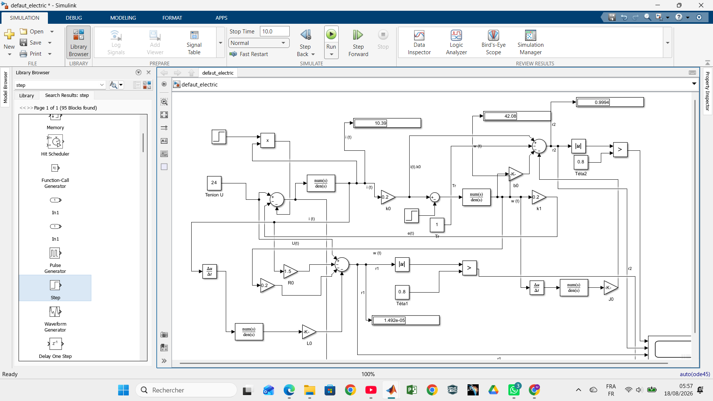

Stage PFA — Modélisation & Diagnostic des Systèmes Électromécaniques
Contexte : Fiabilisation des équipements industriels automatisés et anticipation des défaillances critiques.
Contribution : Modélisation énergétique des chaînes électromécaniques, analyse des modes de défaillance et proposition d'indicateurs de suivi.
Résultat : Détection précoce des anomalies de fonctionnement et amélioration de la disponibilité machine.